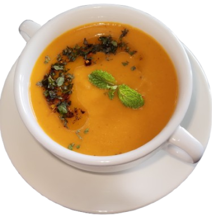
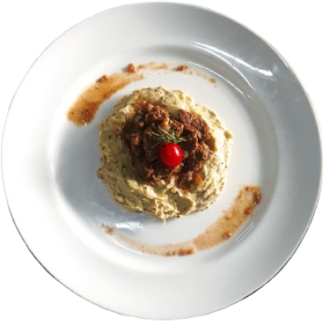
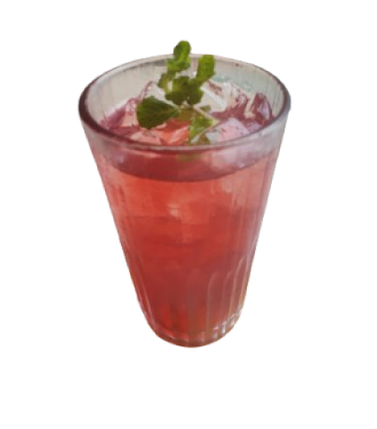

Nikmati Warisan Budaya Turki
Tarian Sufi (Sema/Whirling Dervishes) adalah ibadah dan meditasi spiritual dalam tasawuf yang dilakukan dengan gerakan berputar terus-menerus.

Tari Sufi
Nikmati Warisan Budaya Turki
Tarian Sufi (Sema/Whirling Dervishes) adalah ibadah dan meditasi spiritual dalam tasawuf yang dilakukan dengan gerakan berputar terus-menerus.
Tari Sufi
Agama yang ada di Turki
Turki adalah negara sekuler secara konstitusi, tetapi secara budaya dan sosial sangat dipengaruhi oleh Islam. Negara ini memberi kebebasan beragama bagi warganya.
Islam
Mayoritas penduduk Turki menganut Islam (sekitar 95%+ populasi). Masjid menjadi pusat kehidupan religius dan sosial masyarakat.
Kristen
Agama Kristen merupakan minoritas di Turki. Terdiri dari beberapa denominasi seperti:
Yahudi
Sebagian besar adalah keturunan Yahudi Sephardic yang datang dari Spanyol pada abad ke-15.
Makanan & Minuman Khas Turki
Kuliner Turki menghadirkan kehangatan Sup Mercimek Çorbası, kelezatan Hünkar Beğendi, dan kesegaran Sherbet Ottoman yang mencerminkan kekayaan rasa serta tradisi kerajaan yang bersejarah.



Mercimek çorbası adalah sup lentil khas dari Turki yang terbuat dari lentil merah yang dimasak bersama sayuran dan rempah hingga menghasilkan tekstur lembut dan rasa gurih hangat.
Hünkâr Beğendi adalah hidangan khas dari Turki yang terkenal dengan cita rasa gurih dan teksturnya yang lembut.
Sherbet Ottoman adalah minuman tradisional Turki dari sari buah dan rempah sejak era Ottoman, disajikan dingin dan menjadi cikal bakal sirup modern.

Nazar Boncugu
Nazar Boncuğu adalah jimat mata biru tradisional Turki yang digunakan untuk menangkal energi negatif dan "mata jahat" (ain)

Budaya Minum Teh
Çay (teh) adalah identitas nasional Turki dan simbol keramahan, menjadikannya salah satu negara dengan konsumsi teh tertinggi di dunia.

Budaya Minum Kopi
Türk Kahvesi (Kopi Turki) adalah tradisi sosial mendalam dan Warisan Budaya UNESCO yang melampaui sekadar konsumsi kafein.